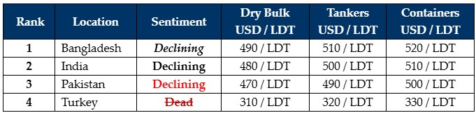

inWeekly Demolition Reports09/09/2024

As we venture past the 2/3rd mark for Q3 and welcome a September that clearly intends to deliver an expectedly subdued scenario across Macroand Micro ends, the unfolding present exhibits no indications of optimism for the near future. On the Macro side of things, the situation in the Middle East is getting even more serious as other than a merciful pause in the violence to allow medicinal aid / polio vaccines be delivered to the masses, Israel has not ‘let off the gas’ as they continue their hunt for the perpetrators of the October 7 genocide after vowing to eliminate Hamas, along with increasing skirmishes between Hezbollah and the IDF in the North that have seen more militants killed and rocket armaments destroyed. While nothing was there to report in the South from the Houthis this week, shipping lanes remain tense after recent successive attacks on passing merchant vessels, including the now un-rescuable Greek-controlled tanker SOUNION that is still burning in the Red Sea. As ISIS fighters target U.S. bases in a unified retaliation this week, Western allies responded by repositioning their navies to the area, further elevating the temperature this summer.
Zooming into the Micro and the start of September saw the industry still witness the inescapable decline that is India’s ship recycling sector today, one that continues to show no signs of it slowing since early June and any expectations that a historical Q4 resurgence is likely to repeat itself, can be fully laid to rest as this does not seem to be an exit on India’s 2024 highway. On the one hand, sub-continent markets indeed appear mired in gloom amidst the ongoing import of cheaper Chinese steel into India & Pakistan that has been undercutting local inventories there and causing steel plate prices to fall, while on the other, political strife and disastrous flooding in have characterized the unfolding crises in Bangladesh. For sub-continent recyclers overall, there have been very few recycling candidates available to test where currently falling levels stand, as they have lost about USD 65/LDT since the peaks seen earlier this year. As such, offers below USD 500/LDT are being regularly tabled on a handy majority of the vessels that are tentatively testing the recycling waters.
Freight markets meanwhile remain a double-edged sword in that, they remain firm across the board keeping vessels employed longer on the one hand, while on the other, this has contributed to the starvation of recycling tonnage resulting in very few sales taking place this year and this may well continue for the rest of 2023, into 2024. Owners who are destined to sell within this year have therefore to accept these lower overall realities as uncertainty & volatility have anchored in. Lastly, Turkey on the far side matches its sub-continent partners with major price declines of its own approaching USD 300/MT. With all markets now at a virtual standstill, Q4 2024 seems destined to being fed off the really old ladies that are only being held together with rust…and love.
For week 36 of 2024, GMS demo rankings / pricing for the week are as below.

📄 Download PDF: Ship-recycling-market-insight-Week-6-9-6-2024-Subdued-September.pdfSource: GMS,Inc.https://www.gmsinc.net/gms_new/index.php/web